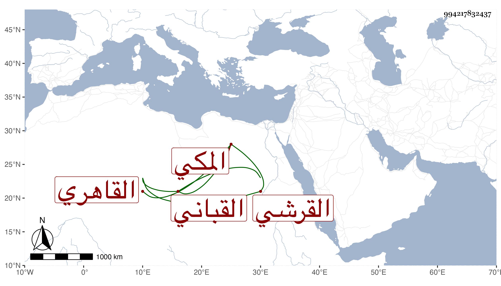

0902Sakhawi.DawLamic.ITO20230111-ara1.EIS1600.994217832437
Biography ID: 994217832437
499
أحمد بن محمد بن محمد بن سالم بن محمد الضياء القرشي المكي ثم القاهري القباني أخو سالم الآتي . ولد سنة ثلاث وتسعين تقريبا وأجاز له الزين المراغي والمجد اللغوي وغيرهما أجاز لنا وتكسب بالوزن بالقبان وكذا بالوزن في مخبز سعيد السعداء وكان أحد صوفيتها مشكور السيرة موثوقا بأمانته كثير التحري في صناعته عديم الخوض فيما لا يعنيه ساكنا دينا لم يزل على ذلك حتى مات في ذي الحجة سنة سبع وستين رحمه الله . ورأيت من قال في نسبه الحموي المكي فيحرر .
